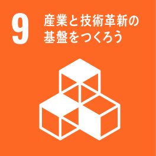
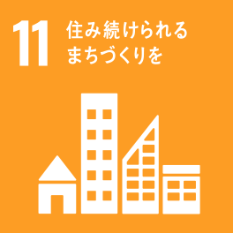

ひとりにいい、みんなにいい、ずっといい
～ユニバーサルデザイン～
高齢化が進む日本、2035年には人口の5人に１人が75歳以上の高齢者になると予測されています。また、現在、世界の約15％の人が何らかの障がいを持っており、その比率は年々増加しています。
「衣食住」の"住"にかかわるLIXILとして、子どもからお年寄りまで世界中のひとりひとりが豊かで快適な住生活を送ることをめざす「ユニバーサルデザイン」を子どもたちに伝えます。
子どもたちにとって、高齢者や障がい者は遠く自分と違う人たちとらえがちです。街や家に施されている身近な「ユニバーサルデザイン」を知ることで、性別、年齢、国籍、障がいの有無などの多様性に関する理解を深め、自分たちができることを考え、行動する力を身に着けるきっかけを提示していきます。子どもたちとともにユニバーサル社会の実現に向けて、私たちは活動に取り組んでいます。
また、各事業所の従業員が授業の講師を務めることで、地域社会との関わりを深め、未来世代への責任について学び、貢献していくことを目指しています。
 ＊このプログラムは、東京 2020 公認教育プログラム（ようい、ドン！）の一つです。
＊このプログラムは、東京 2020 公認教育プログラム（ようい、ドン！）の一つです。
東京2020参画プログラム 公式サイト >
授業の概要
| 対象 | 小学校４－６年生 |
|---|---|
| 関連教科 | 総合的な学習の時間、道徳、国語、社会 |
| 授業時間 | 全2時限（45分×2コマ） |
| 教材 | オリジナルツールを用意 |
| 内容 |
|
| 関連するSDGs |  |
スライド教材 例
日本の人口を100人に換算して、性別や年齢、国籍など、多様な人が暮らす社会であることを学びます。
外国に行った際、何が書いてあれば迷わないか考えることで、自分自身も多様な個性を持つひとりであることを確認します。
耳の不自由な方への伝え方をゲーム形式で楽しく学びながら、伝えることの難しさや相手の立場に立って考える事の大切さを体験します。
身近な家の中の製品が、さまざまな立場の人にとって使いやすいように進化していることを伝えます。
ユニバーサルデザインの工夫を「わかりやすい」「使いやすい」「安全・安心」の3つのポイントで確認し、学びます。
街でみかける「ユニバーサルデザイン」のひとつである多機能トイレを例に、どこがどのように工夫されているのか探します。
グループで意見交換しながら工夫点を見つけていくことで、それらを必要としている人のことを考え、障がい者、高齢者などへの理解をより深めていきます。

活動の実績
2020年3月期は10校24回、904名に授業実施し、2017年からの3年間では、延べ121回、約4,000名の子どもたちが参加しています。
子どもたちの感想
- ユニバーサルデザインがどんな物なのかと、どのようなものがあるかがよく分かって楽しかった。ユニバーサルデザインは、「だれもが暮らしやすい街づくりに大切な物」だという事がよく分かった。（小５）
- この授業を通し、ぼくたちにも出来る事があるんだなと思えて、普段身近な所にある物にもよくみてみると、いろんな工夫がしているという事が分かり、とても楽しく勉強できました。なので、これからもこのことをいかして、積極的にこまっている人を助けたりしていきたいです。（小５）
- さまざまな人がいることと、私たちが生活していく中のうらで一生けんめいに、「どうしたらみんながくらしやすくなるのだろうか」を考えている人が自分の身の周りにいる、ということがすごいと思いました。（小５）
先生の感想
映像、クイズ、グループでの話し合いなど、いろいろな活動があり、児童が大変興味をもって取り組んでいました。内容も難しすぎず、とてもわかりやすかったです。取り上げた事例が児童に身近にあるものでよかったと思います。
今後の活動
従業員自身が地域貢献活動として取り組むことはもちろん、世界の課題と自分の生活の繋がりを伝え、子どもたちが自ら考え行動できるように活動を続けていきます。